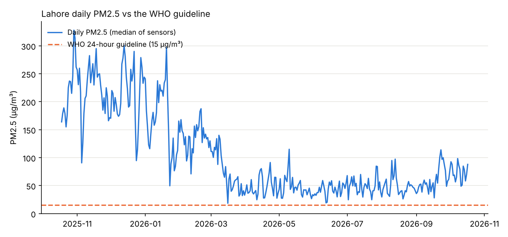
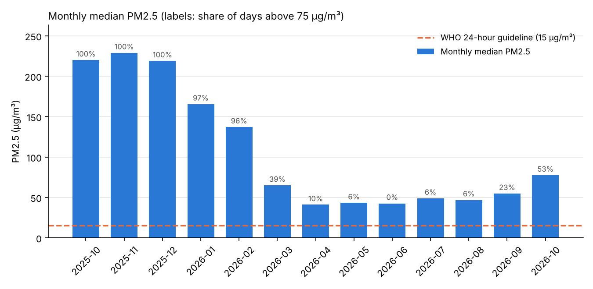

Data analysis · Air quality · Pakistan
Lahore did not have a single clean-air day in the past year
What one year of open sensor data says about the air in Lahore
By Muzammal Hussain · 18 October 2026 · 5 min read
Every winter, Lahore's smog makes headlines for a few terrible days. I wanted a different question answered: across a whole year, how many days was the air actually safe to breathe by the World Health Organization's standard? The answer, from 77 sensors across the city, was none.
Key findings
- All 364 days with data were above the WHO 24-hour guideline of 15 µg/m³. Even the cleanest day, 16 March 2026, measured 18.4 µg/m³.
- 46% of days were above 75 µg/m³, the WHO's weakest interim target, which is five times the guideline.
- The yearly mean was 103.8 µg/m³, about 21 times the WHO annual guideline of 5 µg/m³.
- Winter is extreme, but summer is not clean. Monthly medians reached about 220 µg/m³ from October to December; the cleanest months, April to August, were still around three times the guideline.
Why PM2.5 matters
PM2.5 are particles smaller than 2.5 micrometres, about thirty times thinner than a human hair. They are small enough to travel deep into the lungs and into the bloodstream. In 2021 the WHO tightened its guidelines to a 24-hour mean of 15 µg/m³ and an annual mean of 5 µg/m³, because the evidence showed harm at lower levels than previously thought.
Data and method
- Source: OpenAQ, an open platform that collects air-quality data from many providers. I used its API to download daily averages for every fixed PM2.5 sensor within 25 km of central Lahore, from 18 October 2025 to 17 October 2026.
- Sensors: 84 sensors were found and 77 had usable data, about 46 reporting on a typical day, from three networks (AirGradient, Clarity and Hawanama).
- Cleaning: I removed negative values, readings above 1,000 µg/m³, days with less than 75% hourly coverage, and duplicates. 15,739 of 18,660 sensor-days remained.
- City value: for each day, the median across all reporting sensors, so a single faulty sensor cannot drive the result.
Results

| Measure | Value |
|---|---|
| Days above WHO 24-hour guideline (15 µg/m³) | 364 of 364 (100%) |
| Days above WHO interim target 1 (75 µg/m³) | 46% |
| Median daily PM2.5 | 66.7 µg/m³ |
| Mean daily PM2.5 | 103.8 µg/m³ (21 × annual guideline) |
| Worst day | 29 Oct 2025: 328 µg/m³ (22 ×) |
| Cleanest day | 16 Mar 2026: 18.4 µg/m³ |

What the pattern suggests
The shape of the year is clear. From late October to February, daily values sit mostly between 100 and 300 µg/m³, and every day from October to December was above 75 µg/m³. Air improves sharply in March, stays lowest from April to August, and starts climbing again in September. By mid-October 2026, half of the days were already above 75 µg/m³ again.
The winter peak lines up with well-known drivers: crop-residue burning in the region, cold-season temperature inversions that trap polluted air close to the ground, and weak winds. This analysis does not measure those causes; it shows when the air is worst, and the causes are the next thing to test with weather and fire data.
The more uncomfortable finding is the summer. Even in the cleanest months the typical day was around three times the WHO limit. That points to a year-round baseline, likely from traffic, industry and dust, not only a seasonal smog problem.
How far can the sensors be trusted?
None of the locations used is flagged as a reference-grade monitor in OpenAQ. All 77 are low-cost sensors, which are useful for coverage but can read high in humid conditions, so the exact values carry real uncertainty. The headline finding is robust to this: in the cleanest month the median was 41 µg/m³, so the sensors would have to over-read by about 2.7 times for a typical day to fall within the guideline.
Limitations
Sensors are not spread evenly across the city, and the set of active sensors changes during the year. A mean of daily values over this window approximates, but is not, an official annual mean. Days with no valid data are missing rather than counted as clean.
Next steps
- Calibrate low-cost sensors against a reference monitor on the same days.
- Add humidity, wind, temperature and satellite fire counts to explain the winter peak.
- Compare other cities: see six Pakistani cities, one year of air.
Data: OpenAQ (openaq.org), daily PM2.5 aggregates; the licences of the individual data providers apply. Guideline values: WHO Global Air Quality Guidelines (2021).